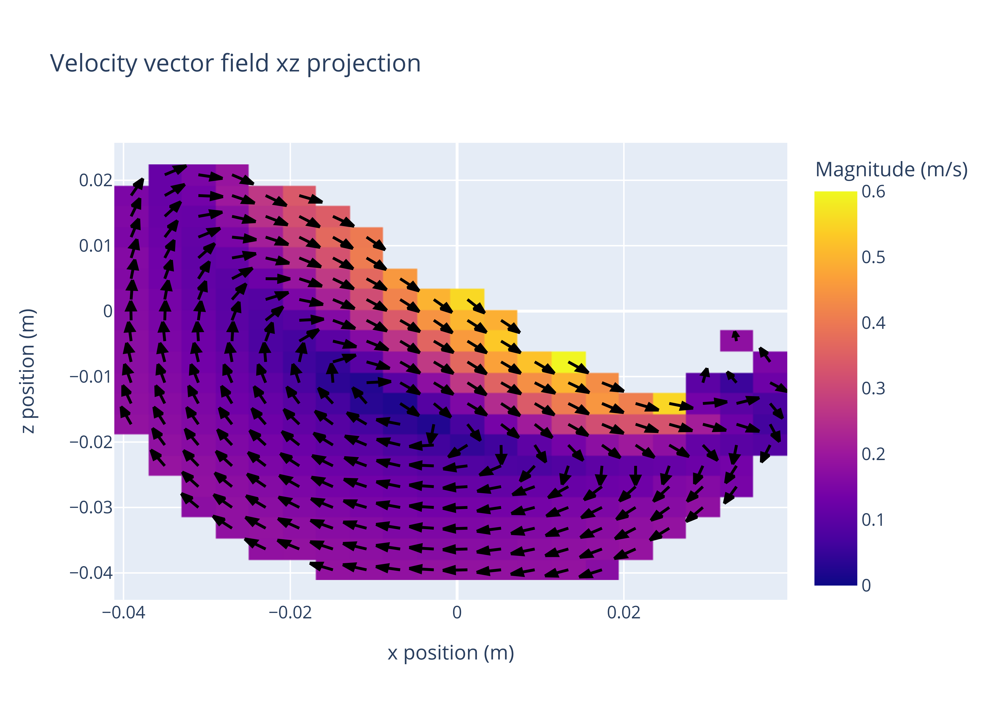

Basic Tutorial#
The usual workflow in up4 consists of 4 steps: Converting, Generating grids, Analysis, and Plotting or short CGAP. This basic tutorial will go through each element in CGAP and explain what it does and how to use it.
Data analysis#
Data analysis is done by methods of the up4.Data class. The most important methods are:
up4.Data.vectorfield: Calculates the velocity vector field of the dataup4.Data.velocityfield: Calculates the magnitude velocity field of the dataup4.Data.numberfield: Calculates the number field of the data
import up4
data = up4.Data("path/to/data.hdf5")
grid_car = up4.Grid.cartesian_from_data(data, cells =[20,20,20])
velocity_field = data.velocityfield(grid_car)
All functions can be called with any type of grid. The velocity field in this example can also be calculated in cylindrical coordinates:
import up4
data = up4.Data("path/to/data.hdf5")
grid_cyl = up4.Grid.cylindrical_from_data(data, cells =[20,20,20])
velocity_field = data.velocityfield(grid_cyl)
Data Visualisation#
Visualisation is done by up4.Plotter2D, which can visualise scalar and vector
fields in 2D.
If we reuse the example from above, plotting can be done by adding the following lines:
from up4.plotting import Plotter2D
dpi = 600 # nice quality image saving
axis = 1 # look along y-axis
index = 4
vector_field = data.vector_field(grid) # for vector plotting
# style plot
layout = dict(
title = "Velocity vector field xz projection",
xaxis_title = "x position (m)",
yaxis_title = "z position (m)",
)
style = dict(
colorbar_title = "Magnitude (m/s)",
zmin = 0.0,
zmax = 0.6,
)
# plot vector field
vec_field_plotter = Plotter2D(vector_field)
vec_fig = vec_field_plotter.unit_vector_plot(
axis = axis,
index = index,
selection = "plane",
layout = layout,
style = style
)
#save plot
up4.save_fig(vec_fig, "unitv.png", dpi=dpi)
Which, looks a little like this:
